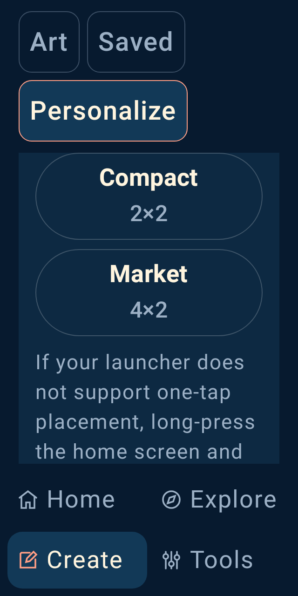
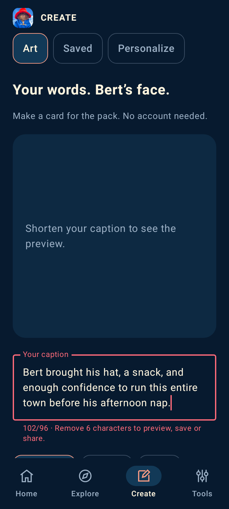
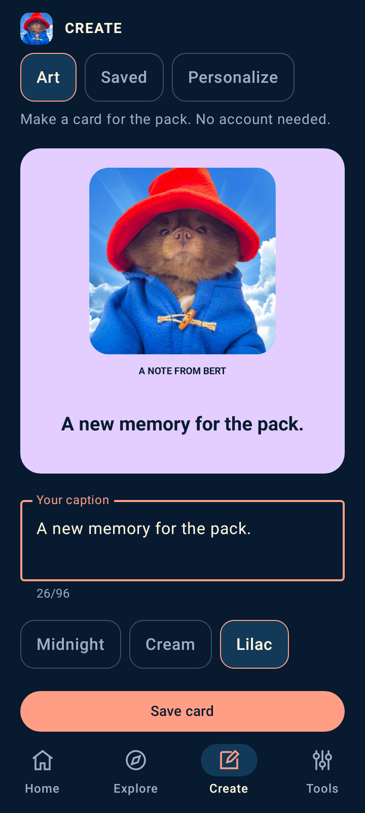
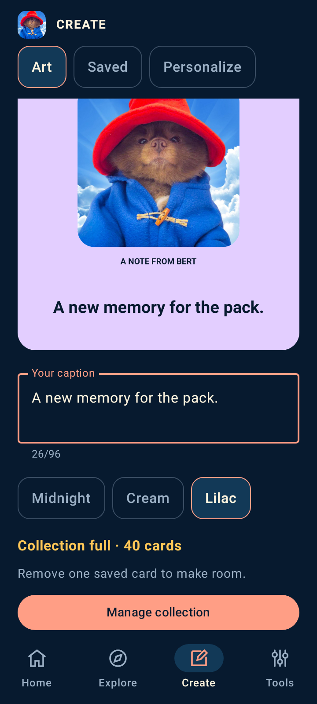
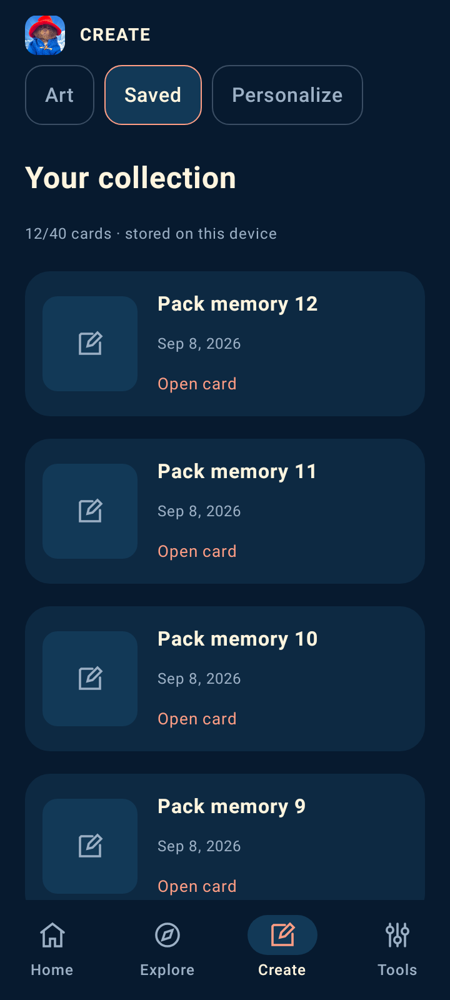
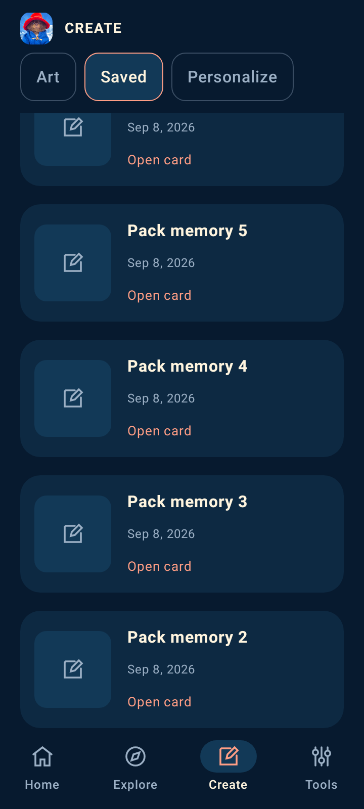
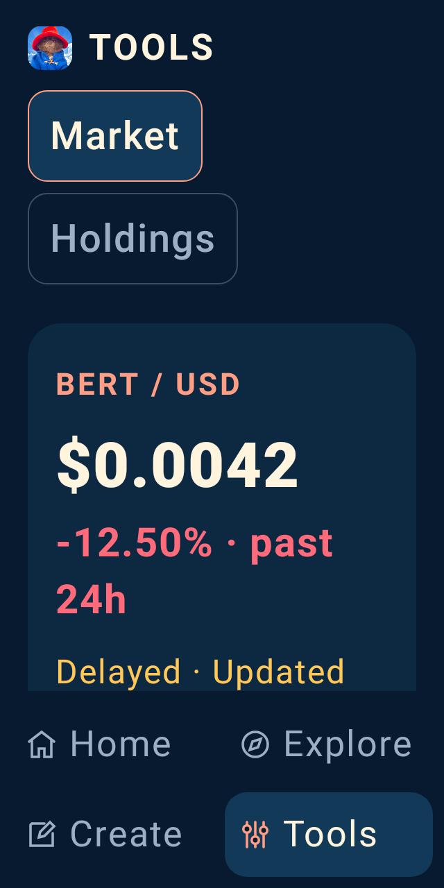
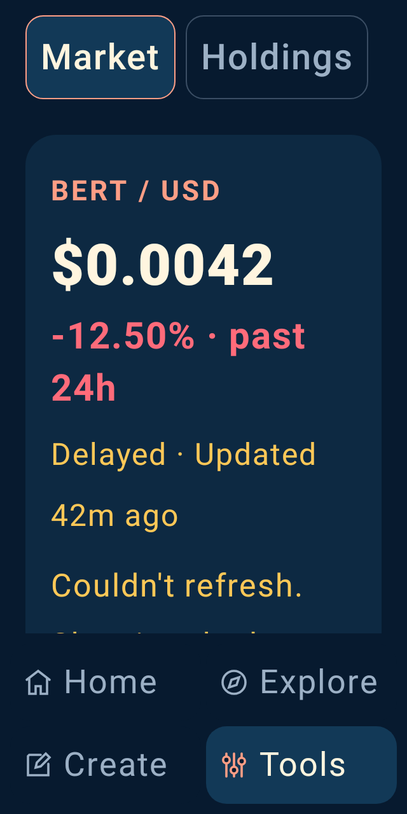
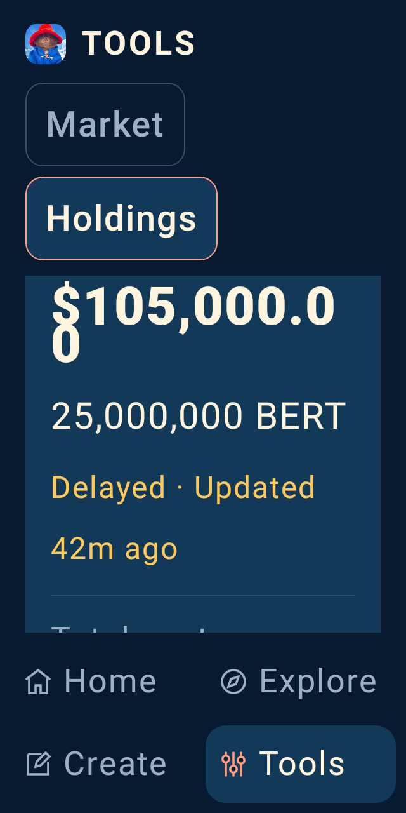
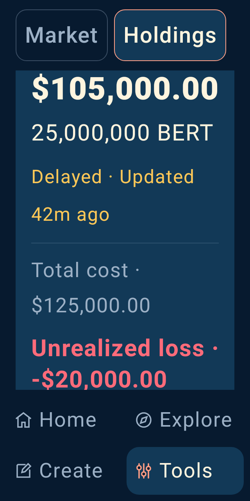

BERT · LOCAL APP REVIEW · 8 SEPTEMBER 2026
A BERT app with room for the whole pack.
The app now has a general Home / Explore / Create / Tools structure, useful offline creation, a private saved collection, readable navigation and honest feedback when actions fail.
Device review is blocked on test access. The screen gallery uses actual Compose host renders with deterministic fixtures. The native attempt below installed an earlier preview but encountered a System UI ANR. Phone performance, TalkBack, launcher behavior and delivery to a share recipient remain unverified. The latest audit finds no connected device or usable emulator acceleration.
Evidence integrity and native diagnostics ·
Acceptance audit
60 + 8Android and service tests passed
211–531 dpFull creation preview in the first viewport
2× textNavigation labels fit measured bounds
Explore the current screens
360×800 dp · xhdpi · Robolectric / API 35 · source f62c961
Native creation leads.
The whole 320 dp artwork preview fits above navigation on arrival. The caption is editable, three palettes are available, and an explicit save keeps the original PNG privately.
Normal-size captures use font scale 1. Large-text captures use font-scale setting 2. Measured scaling is nonlinear: 14 sp becomes 52 px and 38 sp becomes 90.17 px at density 2. Older “linear 2×” labels were inaccurate. Actual keyboard and other Android versions remain device checks.
Exact results and capture hashes · Navigation measurements
The largest visible correction
Originally, Create led with an external web tool and pushed its native preview below most of the first viewport. The current layout puts the user's artwork first and keeps section navigation available while scrolling.
Before · preview starts at 659 dp
 Source 5c1083d. Host UI tests passed; that attempt's full gate was interrupted during lint.
Source 5c1083d. Host UI tests passed; that attempt's full gate was interrupted during lint.
Current · preview starts at 211 dp
Source f62c961. Full development and preview gate passed; phone journeys remain open.
Compact screens: readable control labels
320×640 dp at font-scale setting 2. “Compact” and “Market” previously split inside words. Larger-text actions now stack across the available width. Both names, “Apply both” and “Home only” fit on one line; all measured action targets are at least 48 dp.
Before · words split
 Source c8d418d. A clipping-only test passed; the capture exposed the inadequate criterion.
Source c8d418d. A clipping-only test passed; the capture exposed the inadequate criterion.
Current · labels stay intact

Source f62c961. Stronger single-line and target-size assertions pass.
Compact measurements · Wallpaper actions at 2× text
Mayor Purple’s small negative-change widget text improves from 4.38:1 to 4.66:1. The color check covers 34 declared text/surface pairs against fixed contrast thresholds; it does not certify every state, artwork or physical display. Exact color measurements · Reproduced baseline failures
A paste should not silently disappear
The same 102-character text replacement previously left the old caption in place with no explanation. The revised editor keeps the draft, explains the limit and resumes preview/save/share after correction. The 96-character limit also accepts 96 paw emoji.
Before · old caption remains
 Source bb880f9. Both long-caption and emoji-limit regression tests fail.
Source bb880f9. Both long-caption and emoji-limit regression tests fail.
Current · draft and clear feedback

Source f62c961. Draft retention, correction and Unicode storage tests pass.
Oversized-paste feedback at 2× text · Notice and viewport bounds · 96-emoji boundary capture
The entire large-text notice fits inside its measured scrolling viewport at 320×640 dp. These checks use Compose text replacement; physical keyboards, OS clipboard behavior and TalkBack remain device tests.
A failed save should explain the next step
After a rejected 41st save, the old screen showed no visible feedback. The revised screen reveals the limit and opens collection management. Cancel keeps every card; confirmed deletion frees a slot, and the original draft and palette remain ready to save.
Before · no visible response

Source 2f8e976. The focused UI contract fails; existing-file preservation already passes.
Current · clear recovery

Source f62c961. Complete recovery and compact-text checks pass using 40 seeded cards.
Recovery at 2× text · Measured text and viewport bounds · Count before the list · Original draft saved after recovery
The 80 files belonging to the existing 40 cards remain byte-identical after rejection. The recovery labels fit y=254.5–490 dp inside the y=164–498 dp viewport at 320×640 dp and 2× text, without an extra scroll. These are host checks; native lifecycle and TalkBack remain open.
Keep your place when you come back
Opening an older card used to discard the collection's scroll position. Returning put the selected card offscreen. Collection and detail now keep independent positions, including through saved-state recreation and leaving/returning to Create.
Before · back at the newest cards

Source 047a33b. The selected card moves from y=618 to 1571 dp. Both Back paths fail the position check.
Current · same card, same place

Source f62c961. Both Back paths and saved-state recreation retain y=618 dp. Immediate captures use twelve seeded cards and can show loading thumbnails.
Return at 2× text · Normal measurements · Compact measurements
The compact 2× anchor also stays fixed at y=289.5 dp; the old screen returned it to 2808 dp. All standard-font captures match the previous verified build byte-for-byte. The compact section viewport is now taller; 29 of the prior 49 captures are unchanged overall. The Back dispatcher and saved-state tests run on the host; native gestures and OS process death remain open.
Show the quote and its age together
At large text sizes, a repeated destination heading and two rows of Tools tabs consumed too much of the screen. The quote age extended below the first viewport. Removing that repeated heading and reducing only tab padding brings the entire age into view.
Before · quote age cut off

Source cabc2bd · 320×640 dp · font-scale setting 2. Content viewport 281 dp high; quote age ends at 556.5 dp, below the viewport's 498 dp bottom.
Current · price and complete age

Source f62c961. Content viewport 408 dp high; complete age fits at y=333.5–429.5 dp. Fixture values are not current market data.
Tools gains 127 dp of reading height and Create gains 53 dp. All five section labels remain 16 sp and one line, with fully visible targets 66 dp high and at least 65.5 dp wide. The selected bottom destination still names the section.
Exact first-entry bounds and typography · Create at the compact setting
A compact screen with larger text used to split the cents in $105,000.00. The headline now adapts from 34 to 32 sp and keeps the complete amount on one line. Market labels stack above their values at larger text settings.
Before · cents split

Source a6b2820 · 320×640 dp · font-scale setting 2. Deterministic review amount, not user holdings.
Current · full amount on one line

Source f62c961. Normal size remains 34 sp; compact size uses 32 sp. Exceptionally long values can wrap at an 18 sp floor without losing digits.
Readable Market metrics · Compact typography and touch measurements · Full extreme-value fallback
Chart ranges select five, four or two observations from the labelled history fixture and retain selection after recreation. All three range targets are at least 48×48 dp. Holdings validation, Cancel, saving optional cost and confirmed removal are checked against private storage. These are host flows; quotes and balances shown here are synthetic.
Native attempt: installation passed, journeys blocked
 Actual API 30 software emulator · 360×640 dp · preview APK from 7a54a05
Actual API 30 software emulator · 360×640 dp · preview APK from 7a54a05
Android booted in 208.82 seconds and installed the preview in 106.22 seconds. Empty private storage and disabled network settings were confirmed.
A blocking System UI ANR prevented the navigation checks. This capture shows that BERT rendered, but it is not a passing app journey or proof of physical-device performance.
Native results · Capture provenance and limits